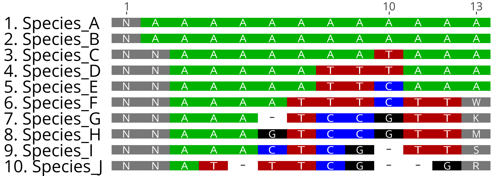

getAlignmentPatterns¶
getAlignmentPatterns takes one or more alignment files and returns site-by-site information about:
Site variation patterns. Possible site patterns include:
non_base: Sites where less than three species have a called, fixed base (A/C/T/G/-)
invariant: Sites made up of a single allele (and possibly missing data)
singleton: Otherwise invariant sites where one or more individual taxa have a unique, separate A/T/C/G/- allele
biallelic: Sites with two possible alleles + possible missing or singleton taxa
triallelic: Sites with three possible alleles + possible missing or singleton taxa
quadallelic: Sites with four possible alleles + possible missing or singleton taxa
pentallelic: Sites with five possible alleles (A + C + T + G + ‘-‘) + possible missing or singleton taxa
Which sites have missing data
Site parsimony-informativeness (i.e. is the site variable, and does the site contain no singleton taxa)
Note 1: This information can be derived from the output from getAlignmentSignal, which also returns information about site splits
Note 2: Rboretum currently does not support handling of degenerate bases, and classifies them broadly as missing. Degenerate nucleotide support is in progress and set for a future version release.
Function and Arguments¶
Usage:
getAlignmentPatterns <- function(alignment_path,species_info,use_gaps,alignment_name,prefix,suffix){
Argument |
Description |
|---|---|
alignment_path |
An absolute or relative path to an alignment file(s) or a directory containing multiple alignments |
species_info |
A list of species to consider, provided as a phylo, multiPhlyo, character vector or labels or a semicolon-delimited string [Default: Shared species among all alignments] |
use_gaps |
If FALSE, consider gaps (-) in alignments as missing data. [Default: TRUE, treat gaps as indel characters] |
alignment_name |
A character vector containing desired alignment IDs [Default: Derive name from filename] |
prefix |
If alignment_path points to a directory, only query files starting with prefix (e.g. ‘Alignment’) [Default: Use all files in directory] |
suffix |
If alignment_path points to a directory, only query files ending wtih suffix (e.g. ‘.nex’) [Default: Use all files in directory] |
Example Usage¶
# Script: Rboretum/docs/content/Doc_Function_Scripts/getAlignmentPatterns.R
library(Rboretum)
# Set test data directory
sourceRboretum()
# Set path to alignment data
myAlignmentFile <- rb_align1_path
mySpecies <- getAlignmentSpecies(myAlignmentFile)
myAlignmentDir <- rb_alignment_dir
# Get alignment Patterns information for a single alignment
getAlignmentPatterns(alignment_path = myAlignmentFile)
Alignment_Position Site_Pattern Non_Base_Count Parsimony_Informative Alignment_Name
1 1 triallelic 0 Yes Gene_1.phylip
2 2 triallelic 0 Yes Gene_1.phylip
3 3 biallelic 0 Yes Gene_1.phylip
4 4 triallelic 0 No Gene_1.phylip
5 5 triallelic 0 No Gene_1.phylip
6 6 triallelic 0 Yes Gene_1.phylip
7 7 biallelic 0 No Gene_1.phylip
8 8 biallelic 0 Yes Gene_1.phylip
9 9 quadallelic 0 Yes Gene_1.phylip
10 10 triallelic 0 Yes Gene_1.phylip
# Get alignment Patterns information from all .phylip files in a directory, providing new names, consider gaps as missing data
getAlignmentPatterns(alignment_path = myAlignmentDir,species_info = mySpecies,use_gaps = FALSE,suffix = ".phylip",alignment_name = c('Gene_A','Gene_B','Gene_C','Gene_D','Gene_E'))
Alignment_Position Site_Pattern Non_Base_Count Parsimony_Informative Alignment_Name
1 1 triallelic 0 Yes Gene_A
2 2 triallelic 0 Yes Gene_A
3 3 biallelic 0 Yes Gene_A
4 4 triallelic 0 No Gene_A
5 5 triallelic 0 No Gene_A
6 6 triallelic 0 Yes Gene_A
7 7 biallelic 0 No Gene_A
8 8 biallelic 0 Yes Gene_A
9 9 quadallelic 0 Yes Gene_A
10 10 triallelic 0 Yes Gene_A
.
.
.
# Get alignment Patterns from dummy alignment, with and without gap support
getAlignmentPatterns(alignment_path = rb_dummy_align_path)
Alignment_Position Site_Pattern Non_Base_Count Parsimony_Informative Alignment_Name
1 1 non_base 10 No Dummy_Alignment.fa
2 2 non_base 8 No Dummy_Alignment.fa
3 3 invariant 0 No Dummy_Alignment.fa
4 4 singleton 0 No Dummy_Alignment.fa
5 5 singleton 0 No Dummy_Alignment.fa
6 6 singleton 0 No Dummy_Alignment.fa
7 7 biallelic 0 Yes Dummy_Alignment.fa
8 8 triallelic 0 Yes Dummy_Alignment.fa
9 9 quadallelic 0 Yes Dummy_Alignment.fa
10 10 pentallelic 0 Yes Dummy_Alignment.fa
11 11 biallelic 0 No Dummy_Alignment.fa
12 12 biallelic 0 No Dummy_Alignment.fa
13 13 invariant 5 No Dummy_Alignment.fa
getAlignmentPatterns(alignment_path = rb_dummy_align_path,use_gaps = FALSE)
Alignment_Position Site_Pattern Non_Base_Count Parsimony_Informative Alignment_Name
1 1 non_base 10 No Dummy_Alignment.fa
2 2 non_base 8 No Dummy_Alignment.fa
3 3 invariant 0 No Dummy_Alignment.fa
4 4 singleton 0 No Dummy_Alignment.fa
5 5 invariant 1 No Dummy_Alignment.fa
6 6 singleton 1 No Dummy_Alignment.fa
7 7 biallelic 0 Yes Dummy_Alignment.fa
8 8 triallelic 0 Yes Dummy_Alignment.fa
9 9 quadallelic 0 Yes Dummy_Alignment.fa
10 10 quadallelic 2 Yes Dummy_Alignment.fa
11 11 biallelic 1 Yes Dummy_Alignment.fa
12 12 biallelic 0 No Dummy_Alignment.fa
13 13 invariant 5 No Dummy_Alignment.fa
# Postion 2 is 'non_base' because < 3 species have a called base
# Note: Sites 5, 6, 10, and 11 have species with gap positions.
# Treating gaps as missing data sets all gap taxa to missing taxa in the bottom dataframe, and also changes the reported site patterns for rows 5 + 10
Dummy Alignment
{kind=link}